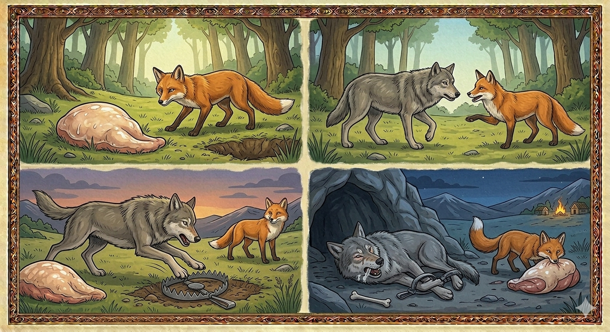

И.А. Дахкильгов. Хьехаме дувцарш - поучительные рассказы-притчи.
И.А. Дахкильгов. Хьехаме дувцарш - поучительные рассказы-притчи. Из ингушского фольклора.

ХӀанз баа мегаргба ер думи
Хьуна петарашка лелача цогала бӀаргабейнаб шаьрача метте улла боккха думе лич. - Даьсара, ер думи иштта паргӀата уллаш тешаме ма бац. Цхьан тийшача балха уллош хила беза ер, - лаьрхӀад цогало. Гаьна йоацаш йодаш йола бордз бӀаргаейнай цогала. Дедда цунна тӀадахад из. Аьннад: - Бози, вайна думи бола моттиг кораяьй сона. Хьо йоккхагӀа хиларах, хьалхагӀа Ӏа цох хӀама кхаьллача бакъахьа хетар сона. Мичаб из аьнна, цогала тӀехьа яхай бордз. Думе шийна бӀаргагушшехьа, кхоссаенна цунна тӀакхийттай из. Циггач чарахьас оттаяь боанг хиннай. Боанг хьалтосса а енна, думе дӀа-а дӀа а бодаш, бордз дӀалаьцай. - ХӀа-а, хӀанз баа мегаргба ер думи, - аьнна, из баа цогал дӀаэттад. Боанго дӀалаьцача етталуш, Ӏазап озаш бордз хиннай.
РУССКИЙ
Теперь можно скушать этот курдюк
Бежала лисица по лесной опушке и увидела лежащий курдюк. "Клянусь, не зря он тут так открыто лежит. Видно, не с добрым умыслом его положили", - решила лисица. Тут она увидела бредущего невдалеке волка. Подбежала к нему лисица и сказала: "Волк, я тут неподалеку нашла для нас курдюк. Поскольку ты старший, я бы хотела, чтобы сначала его отведал ты". Волк пошел за лисицей, и лишь только увидел курдюк, как тут же и прыгнул на него. А там охотниками был спрятан капкан. Он захлопнулся, курдюк отбросило в сторону, а волка намертво схватил капкан. "Вот теперь можно скушать этот курдюк", - сказала лисица и принялась за него, а волк тем временем от боли корчился в капкане.
ENGLISH
Now we can eat this fat tail
The fox was running along the edge of the forest when she spotted it lying there. "I swear it's not just lying there for no reason. It clearly wasn't left there with good intentions," thought the fox. Just then, she saw a wolf wandering nearby. She ran up to him and said: "Wolf, I've found a fat tail not far from here. Since you're the elder, I'd like you to have a taste of it first." The wolf followed the fox and, as soon as he saw the fat tail, pounced on it. But hunters had hidden a trap there. It snapped shut, flinging the fat aside whilst catching the wolf fast. "Now we can eat this lamb's fat," said the fox. He set about eating it whilst the wolf writhed in pain in the trap.
НОХЧИЙН
ХӀинца баа мегар бу хӀара дум
Хьуьнан къухехь лелачу цхьогалан гина шерачу меттехь Ӏуьллу боккха дуьман лийчиг. - Десара, хӀара дума иштта паргӀат Ӏуьллуш тешаме ма бац. Цхьана тешначу бехкан Ӏуьллуш хила беза хӀара, - сацам бина цхьогало. Гена йоцуш йодуш йолу борз гина цхьогална. Дедда цунна тӀадахна иза. Аьлла: - Борзи, вайна дума болу меттиг карийна суна. Хьо йоккхах хиларах, хьалха ахь цунах хӀума кхаьллича бакъахь хетар суна. Мича бу иза аьлла, цхьогалан тӀехьа йахна борз. Дума шена бӀаргагушшехьа, кхоссаелла цунна тӀекхетта иза. Циггахь таллархочо хӀоттийна гур хилла. Гур хьалтаса а белла, дума дӀа-а дӀа а боьдуш, борз дӀалаьцна. - ХӀа-а, хӀинца баа мегар бу хӀара дума, - аьлла, иза баа цхьогал дӀахӀоьттина. Гуро дӀалаьцначохь йетталуш, Ӏазап уьйзуш борз хилла.
ПОГОВОРКИ